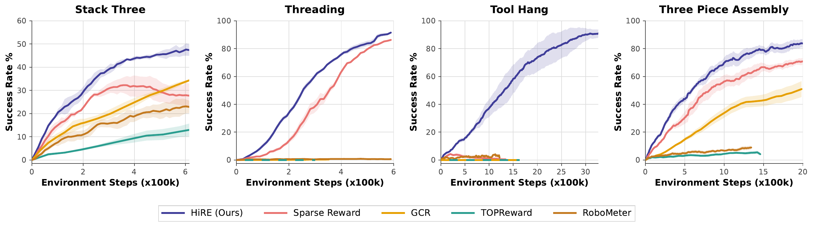
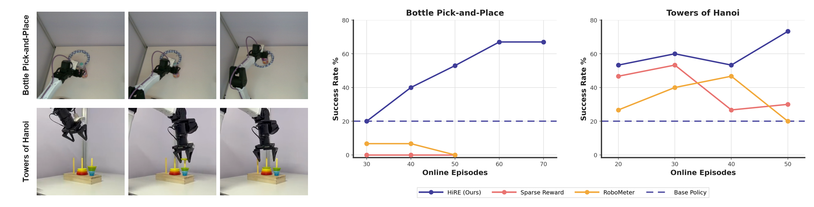
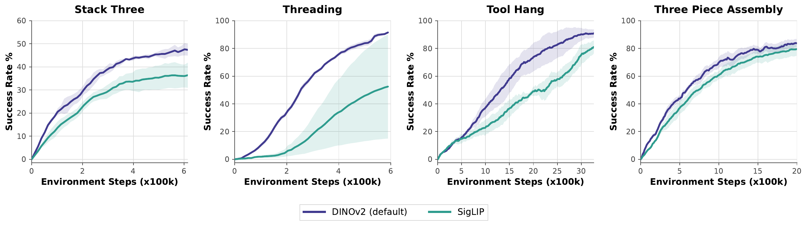
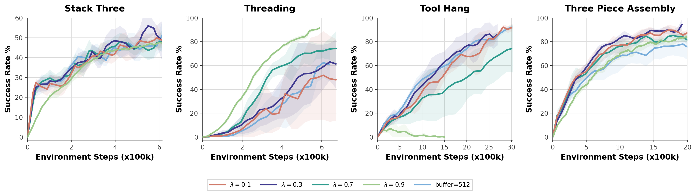
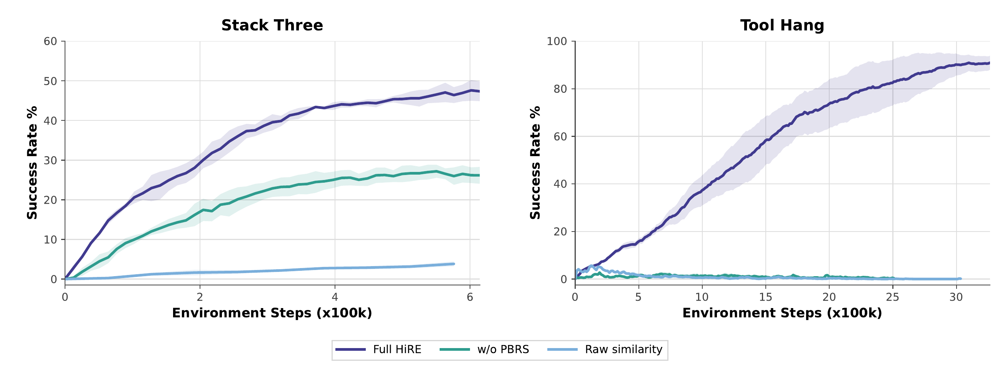
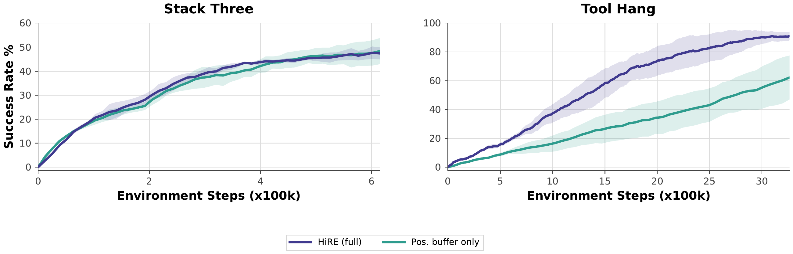
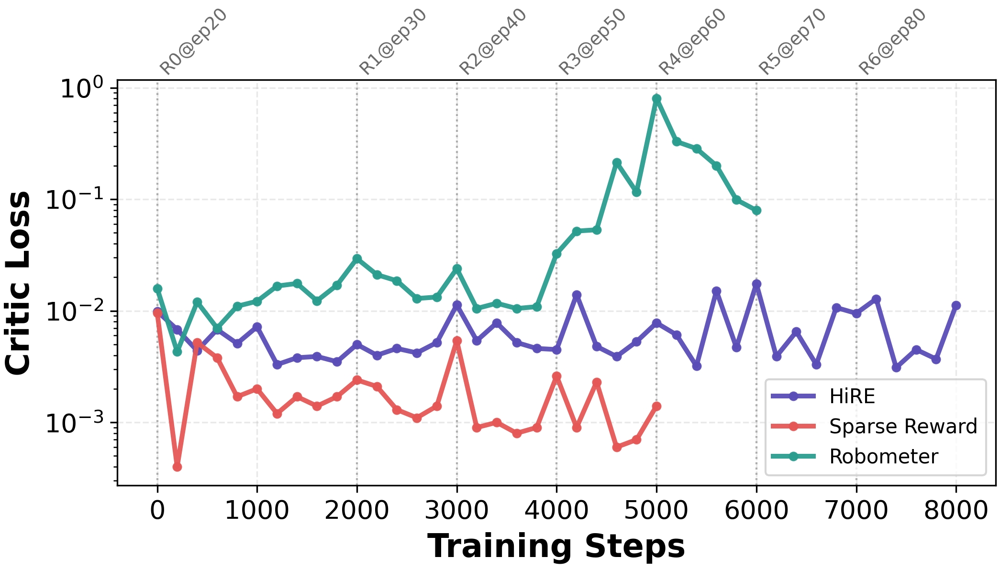

HiRE: Hindsight Reward Editing
for Policy Finetuning
1 University of California, Berkeley2 The Chinese University of Hong Kong
Abstract
Reinforcement learning can improve pretrained robot policies, but its effectiveness depends on reward quality. Sparse rewards lack process feedback, while foundation representations often miss physical task outcomes. We propose Hindsight Reward Editing (HiRE), a training-free framework that contrasts successful and failed rollouts to penalize deceptive traps and reinforce genuine task progress. HiRE provides dense, control-aware feedback without training an additional reward model and is compatible with different foundation representations and RL algorithms. Experiments in both simulation and the real world demonstrate significant gains in sample efficiency and task success rates.
Method
A robot may move toward the placement area after dropping the object it was supposed to carry. The scene can look increasingly similar to the goal even though the task has already failed. HiRE addresses this mismatch by calibrating visual similarity against physical outcomes: successful experience identifies useful progress, while failed experience exposes misleading “trap states.”
The key idea is to estimate a log-density ratio between successful and failed states in a frozen foundation representation space. A positive buffer combines expert demonstrations with successful online experience; a negative buffer retains recent terminal failure observations. Using von Mises-Fisher kernels over cosine similarities, HiRE computes a closed-form potential that attracts the policy toward successful states and repels it from failure traps. The representation stays frozen, and reward adaptation requires no gradient updates.
HiRE integrates this potential with the sparse success signal through potential-based reward shaping. The temporal difference below supplies dense feedback while retaining task success as the objective:
As new rollouts arrive, FIFO buffers replace older online evidence, so reward editing follows the policy’s current strengths and failure modes. HiRE reshapes only the reward signal, making it compatible with different foundation representations and RL finetuning algorithms.
Experiments
We ask whether a better reward can improve an already strong policy-finetuning pipeline. In the main comparisons, all methods use the same DICE-RL backbone and the same initial policy within each task. We compare HiRE with sparse success rewards, the pretrained robotic reward model RoboMeter, the training-free VLM reward TOPReward, and GCR, which adapts its reward representation through gradient-based updates.
Simulation benchmarks
HiRE improves both final success and sample efficiency. On Stack_Three and Three_Piece_Assembly, it reaches roughly 50% and over 80% success, compared with around 30% and 70% under sparse rewards. On Tool_Hang, it enables learning where sparse-reward finetuning fails. On Threading, it reaches comparable success with markedly fewer online interactions.
RoboMeter and TOPReward achieve substantially lower final success rates, suggesting limited reward generalization to these tasks. GCR adapts rewards from online failures through gradient-based updates, but needs roughly 3× as many interactions to reach 30% success on Stack_Three and Three_Piece_Assembly, and makes little progress on the precision tasks. HiRE achieves more consistent improvement through training-free reward editing.

Real-robot experiments
On Bottle_Pick-and-Place, HiRE steadily guides the policy toward better performance, boosting success from 20% to 67%, whereas the sparse-reward and RoboMeter baselines nearly fail entirely in the early training phases. Evaluation spans six initial bottle positions, testing compliant manipulation and spatial generalization.
On Towers_of_Hanoi, HiRE reaches 53.3% success with only 20 episodes and eventually peaks at 73.3% (3.67× the base policy). Sparse reward peaks at 53.3% after 30 episodes and RoboMeter at 46.7% after 40, before declining to 30% and 20%, respectively, at 50 episodes. These comparisons show HiRE’s superior sample efficiency, stable improvement, and higher policy performance ceiling on both hardware tasks.

Bottle_Pick-and-Place uses 30 evaluation trials per checkpoint across six initial positions; Towers_of_Hanoi uses 15. The base policies are initialized from 117 and 50 teleoperated demonstrations, respectively.Compliant manipulation across six starting positions. The robot must grasp a deformable plastic bottle, carry it to the paper plate, and release it without slipping or bouncing away.
Position P1 · 1 / 6
Understanding HiRE
Correcting misleading visual rewards
In the Threading example, correctly approaching the target initially makes the observation look less like the final goal, so raw DINO similarity decreases. Later, the robot loses its target and leaves the camera view, yet the raw score rises as the background resembles the goal frame. HiRE corrects these false negatives and false positives: successful histories reinforce the useful approach, while failure evidence penalizes the visually plausible trap. The edited potential follows task progress more faithfully than goal-frame resemblance alone.

Threading and Stack_Three. Raw goal similarity and HiRE potentials along representative trajectories.Adapting to harder failure modes
The negative buffer initially concentrates around early failures near the starting state. As the policy improves, older samples are replaced by localized, later-stage failure modes near the goal. This keeps reward correction focused on current traps. The joint t-SNE visualization also shows a compact success distribution and a broader failure distribution, supporting HiRE’s asymmetric kernels: sharp attraction toward success and broader repulsion from failure.
Ablations and training dynamics
Foundation representations
Both DINOv2 and SigLIP provide useful dense guidance across all four tasks. Replacing the frozen encoder leaves the hindsight-editing recipe intact. DINOv2 achieves higher success rates overall; SigLIP is closer on Tool_Hang and Three_Piece_Assembly, but learns more slowly on Stack_Three and especially Threading. The recipe transfers across representations, while encoder choice still affects efficiency and reliability.

Hyperparameter sensitivity
HiRE is broadly insensitive to hyperparameter choices. We vary the contrastive weight λ across {0.1, 0.3, 0.7, 0.9} and test a negative-buffer capacity of 512. The variants perform similarly on Stack_Three, and every configuration substantially improves Three_Piece_Assembly, with some differences in learning speed and final success. HiRE therefore retains effective learning across a broad range of settings.
Precision-critical tasks show more task-dependent behavior. On Threading, reducing λ or enlarging the buffer slows improvement, consistent with weaker repulsion or retention of outdated failures. On Tool_Hang, λ = 0.1 and 0.3 provide stronger guidance, whereas λ = 0.9 fails to sustain improvement. Together, these results support broad parameter insensitivity on multi-stage tasks while showing the value of appropriate failure correction for precision manipulation.

Reward composition
Hindsight editing and potential-based shaping work best together. On Stack_Three, full HiRE learns faster and reaches higher success than directly adding the edited potential or raw goal similarity. On Tool_Hang, both alternatives remain near zero while full HiRE continues to improve. The edited potential still outperforms raw similarity on Stack_Three, indicating that hindsight correction is useful even without temporal-difference shaping.

Success and failure buffers
Failure awareness is most valuable when near-goal failures look successful. On Stack_Three, the positive-only variant closely tracks full HiRE and finishes slightly higher. On Tool_Hang, full HiRE learns faster and reaches above 90%, while the positive-only variant improves more slowly and plateaus lower. Success attraction supplies useful guidance, but the negative buffer adds the correction needed to distinguish deceptive failures in precision manipulation.

Critic feedback on the real robot
Dense, outcome-grounded rewards sustain informative critic updates. During Bottle_Pick-and-Place finetuning, sparse rewards produce prematurely low critic loss alongside failed policy improvement, while RoboMeter’s loss does not converge. HiRE maintains non-trivial critic updates as success increases. The paper interprets this contrast as evidence that hindsight editing supplies useful learning signals when sparse feedback is insufficient.

Bottle_Pick-and-Place finetuning. HiRE maintains non-trivial updates, compared with prematurely low loss under sparse rewards and non-converged loss under RoboMeter.BibTeX
@misc{niu2026hire,
title = {HiRE: Hindsight Reward Editing for Policy Finetuning},
author = {Niu, Haoyi and Han, Zhengtao and Ji, Yufeng and
Li, Zhongyu and Sreenath, Koushil},
year = {2026},
url = {https://hire-project.github.io/}
}